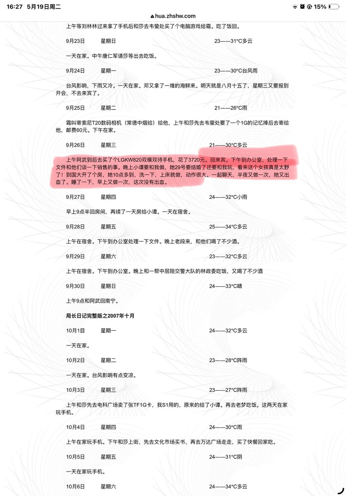
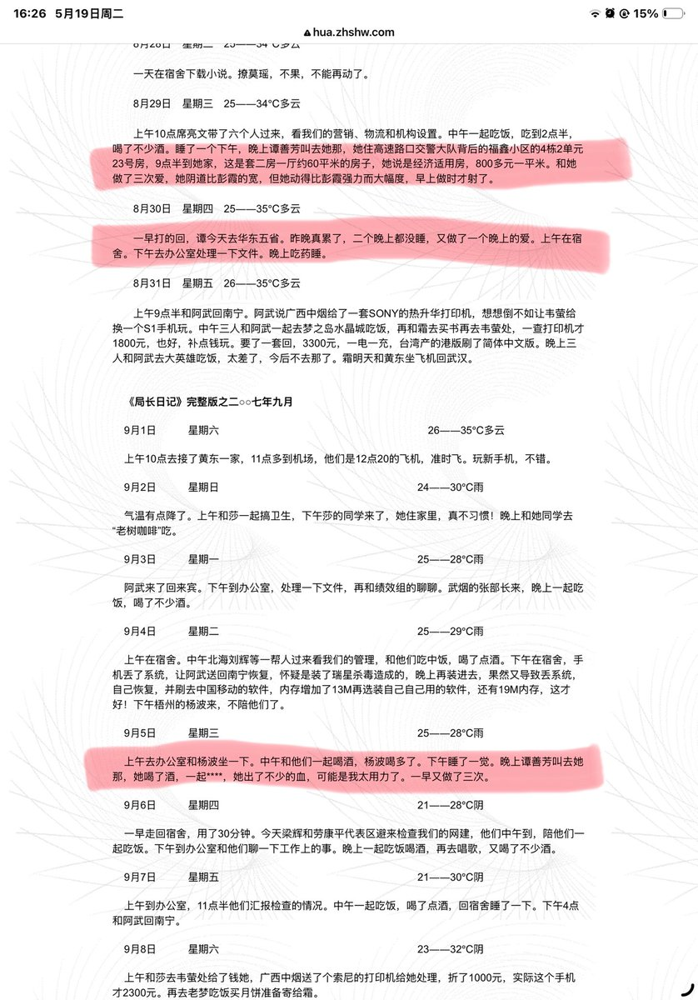
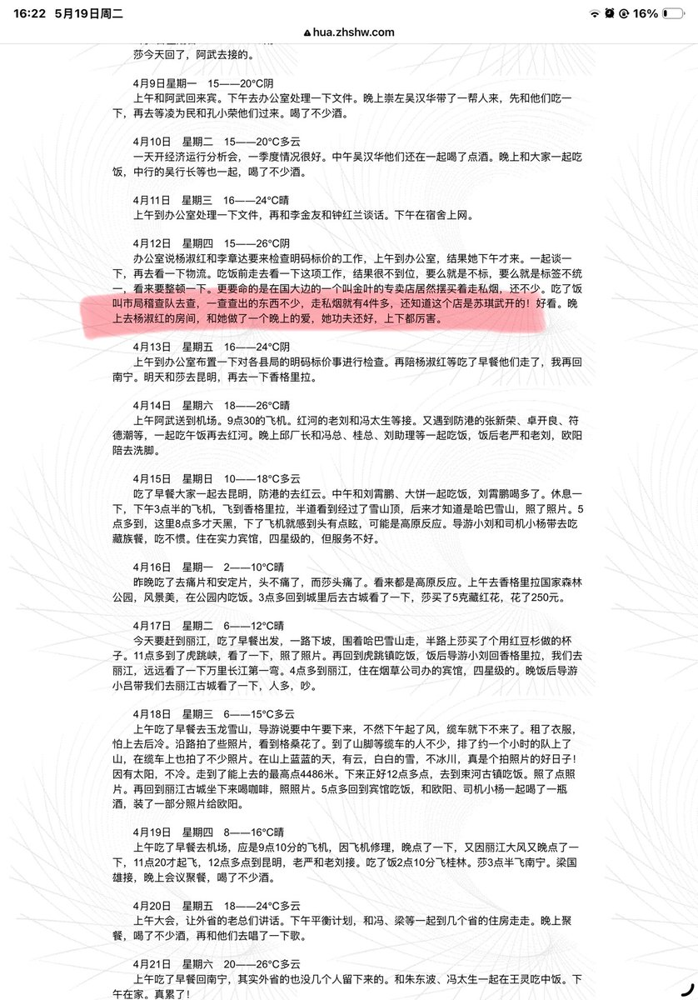

拱北靠北
@psyofsouthwest
@maoshen 非常真实的AI短剧剧本



猫神
@maoshen
《韩峰日记》#又称局长日记 #香艳日记
是2010年中国互联网最轰动的反腐事件。
日记由广西来宾市烟草专卖局局长韩峰所写，记录了一年多的真实生活。
2010年2月，被情妇谭善芳的丈夫在天涯社区曝光，迅速引爆全网。
日记内容简单直白却极度露骨，网友将其核心概括为喝酒、收钱、玩女人：
• https://t.co/fe5Gcm39IA